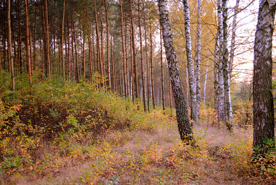
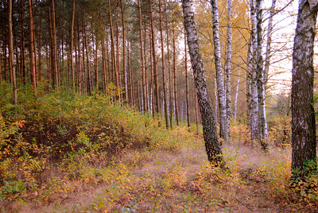

One area of landscapes I like is pictures of forests. Here is an example, and it shows a new perspective.
A collection of nature landscapes I find prettiest
One area of landscapes I like is pictures of forests. Here is an example, and it shows a new perspective.
